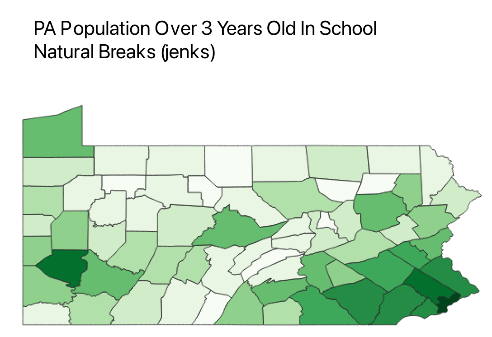
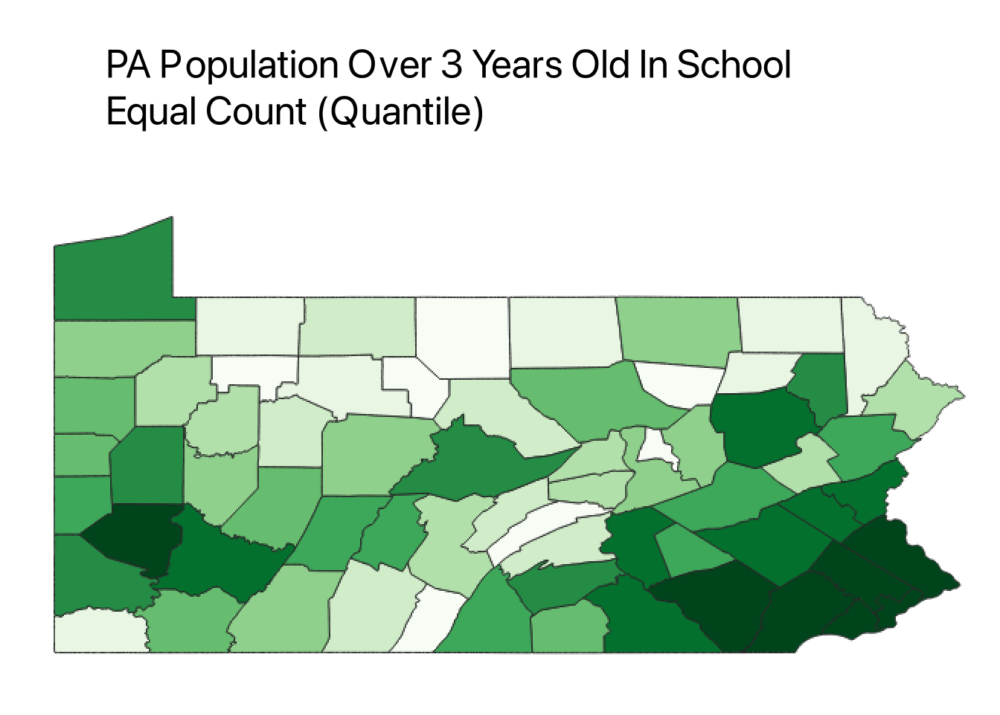
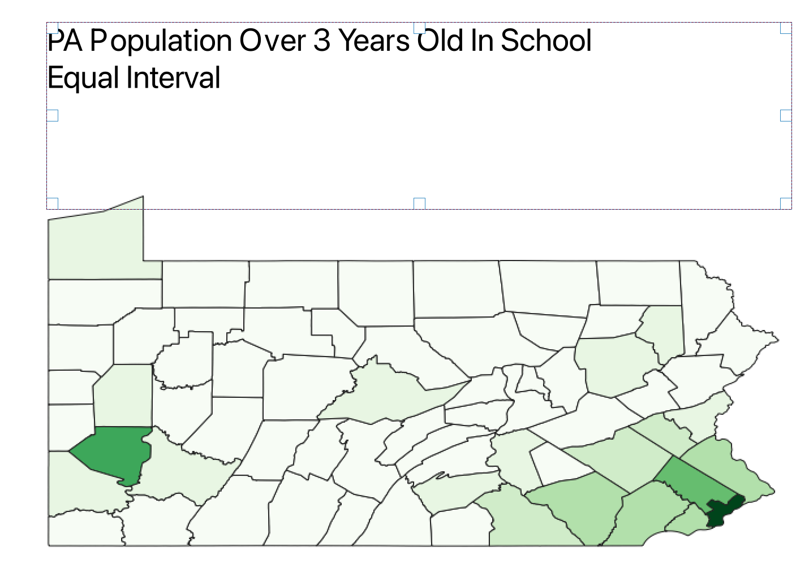

Homework 6.2

The natural breaks mode with 10 classes represented the educational population throughout the state of Pennsylvania. 10 classes was choosen because of the state's 67 counties, which gives approximately 7 counties per classification. The natural breaks gives a slightly accurate representation compared to the other two modes. The population is dense in the city centers of the state while also representing population within more rural parts of the state.

The equal count mode with 10 classes represented the educational population as well but showed a different picture. Here more counties even on the outskirts of the city appeared to have high population densities. I believe that this is the best representation of the state because of the even distribution of the colors throughout the state.

Finally equal interval is the least accurate out of the 3 modes. Here the one of the smallest counties of Pennsylvania is the only one in dark green because it is where the city of Philadelphia is. This makes the other counties in the state look uninhabited.